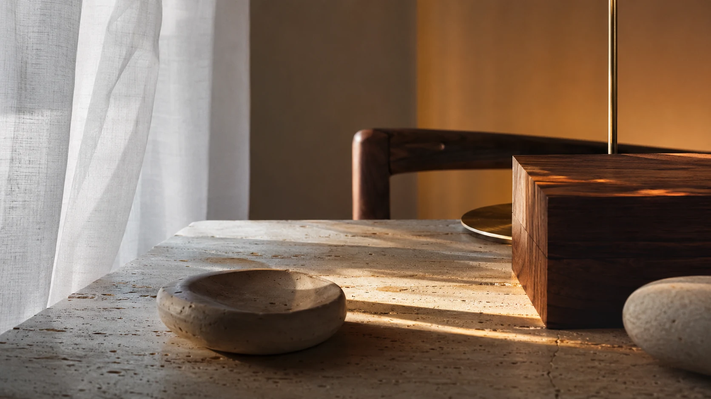
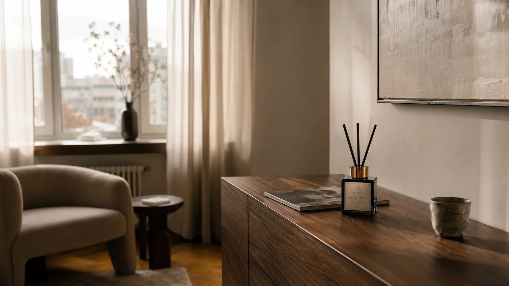

Дім,
який відчуваєш.
VA HOME Journal — не про те, як «правильно пахнути». Це видання про невидиму архітектуру дому: матеріали, ритуали й формули, що змінюють простір тихіше за декор.
Читати випускНе блог.
Занурення.
Ми показуємо те, чого не видно у готовому флаконі: навіщо формулі потрібні молекулярні матеріали, чому тестування триває тижнями і як аромат стає частиною особистого простору.

Чому дорогий аромат не кричить
Що відрізняє побудовану формулу від просто сильного запаху — і за що насправді платить людина.
Відкрити матеріалЗа красивим флаконом.
Молекулярні матеріали, версії, база й тижні живих тестів — робота, яку не видно у готовому продукті, але саме вона формує його характер.

Що таке молекулярна композиція
Ароматичний акорд задає образ. Молекулярна архітектура дає йому об’єм.

Як народжується формула VA HOME
Від сцени й відчуття — до версій, тестів і фінального балансу.

Чому ми тестуємо аромати тижнями
Один вдалий вечір ще нічого не доводить.

Ambroxan: матеріал, що створює простір
Суха амброво-деревна опора, мінеральність і дифузний об’єм.

Iso E Super: майже невидима присутність
Оксамитова деревність і повнота, які не перекривають композицію.
Відчути свій напрям.
Не вчитися говорити мовою парфумера, а зрозуміти, яка атмосфера потрібна саме вашому дому.

Свіжі чи теплі: як відчути своє
Два напрямки — і значно точніший перший вибір.

Що насправді означають ноти
Чому перелік нот не розповідає всю історію композиції.

Як обрати аромат для спальні
Не лише за нотами, а за інтенсивністю і способом життя в кімнаті.

Noir — не про темряву
Про глибину, матеріали й характер без демонстративності.
Аромат після флакона.
Коли композиція входить у реальну кімнату, починається друга частина її життя. Тут важливі повітря, світло, звички й час.

Перші 48 годин
Як запускається дифузія і чому не варто поспішати з оцінкою.

Чому кімната змінює аромат
Повітря, температура й розташування стають частиною звучання.

Як жити з дифузором
Палички, місце і час: просте налаштування без зайвих ритуалів.

Чому аромат іноді зникає — і повертається
Про нюхову адаптацію, молекулярну архітектуру й аромат, що живе у просторі хвилями.

Вечірній ритуал
Момент, коли дім перестає вимагати швидкості.
Простір має характер.
Деревні, квіткові, свіжі й готельні напрями — та кімнати, у яких вони розкриваються найточніше.

Деревні аромадифузори
Кедр, ветивер, мох і смоли — не як окремі ноти, а як архітектура повітря.

Квіткові аромадифузори
Квіти можуть звучати прозоро, сухо, зелено або вечірньо — далеко за межами солодкого букета.

Свіжі аромадифузори
Цитрус, мінерали, зелень і чистий текстиль — чотири різні способи додати повітря.

Готельні аромати для дому
Готельне відчуття створює не одна нота, а баланс чистого текстилю, повітря, світла й масштабу.

Аромадифузор для вітальні
Вітальня потребує не просто сильного аромату, а композиції, що тримає об’єм і не втомлює.
Аромадифузор для ванної
У ванній аромат зустрічається з теплом, водою й каменем — тому поводиться інакше, ніж у сухій кімнаті.
Цінність без гучних слів.
П’ять чесних порівнянь для моменту, коли аромат уже хочеться купити — але важливо зрозуміти формат, якість і точність вибору.

Український чи імпортний аромадифузор
Країна створює контекст. Якість створюють формула, тести й система.
Аромадифузор чи ароматична свічка
Постійна атмосфера проти окремого ритуалу — без знецінення жодного формату.
Преміальний дифузор проти масмаркету
Не про ціну на коробці. Про формулу, базу, палички й контроль у реальному просторі.
Аромадифузор без різкого запаху
Як отримати м’яку, але відчутну присутність і не перевантажити кімнату.
Преміальний дифузор у подарунок
Як подарувати атмосферу, не намагаючись вгадати людину одним ароматом.